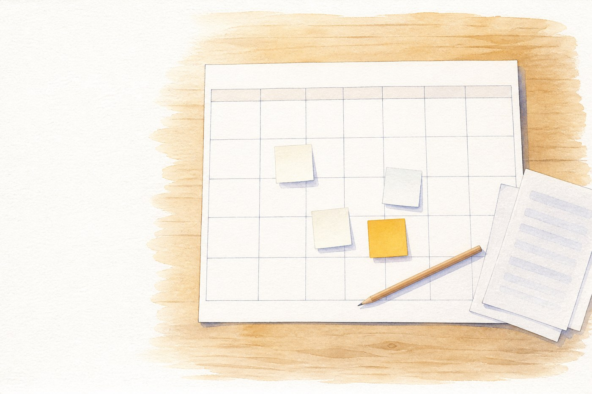
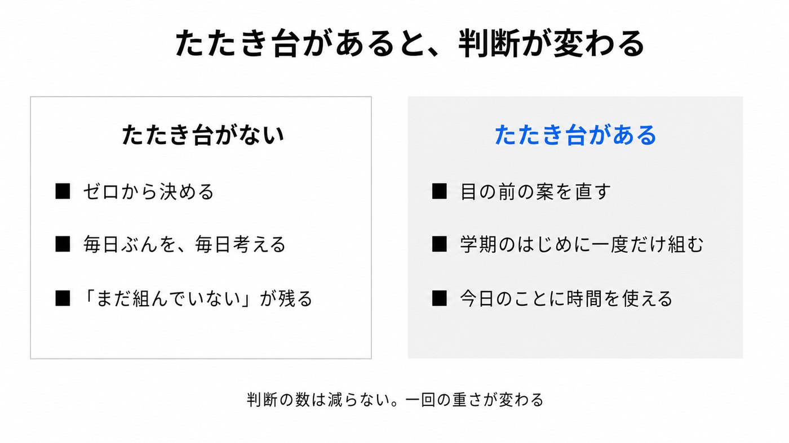
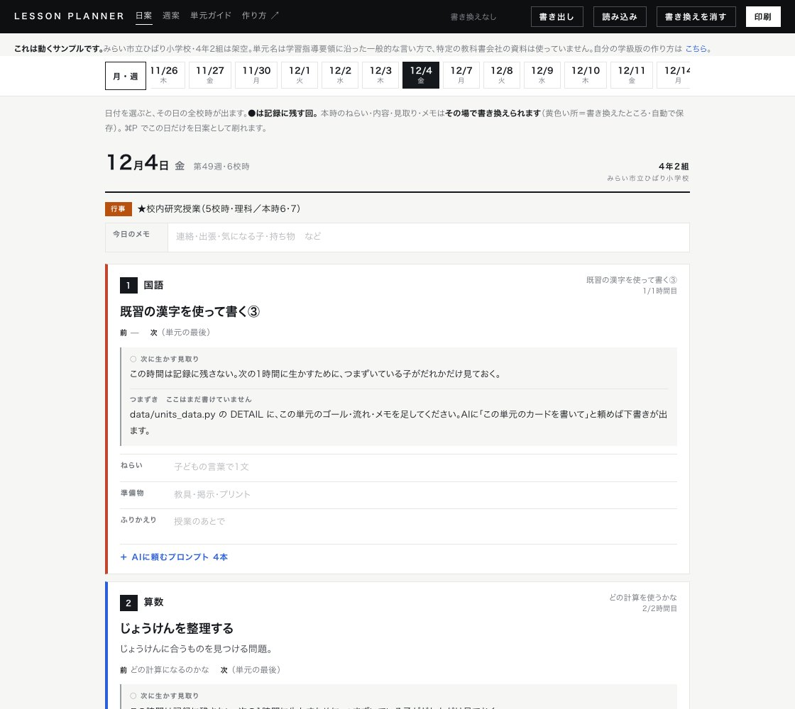
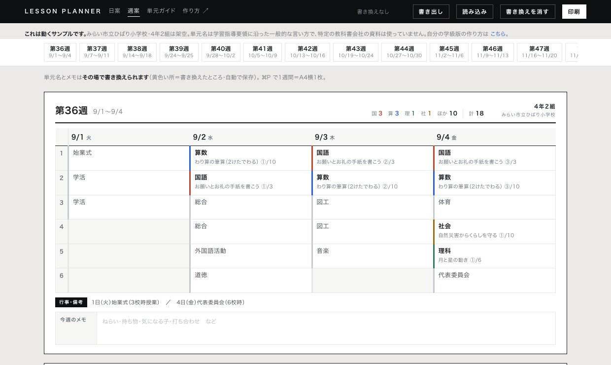
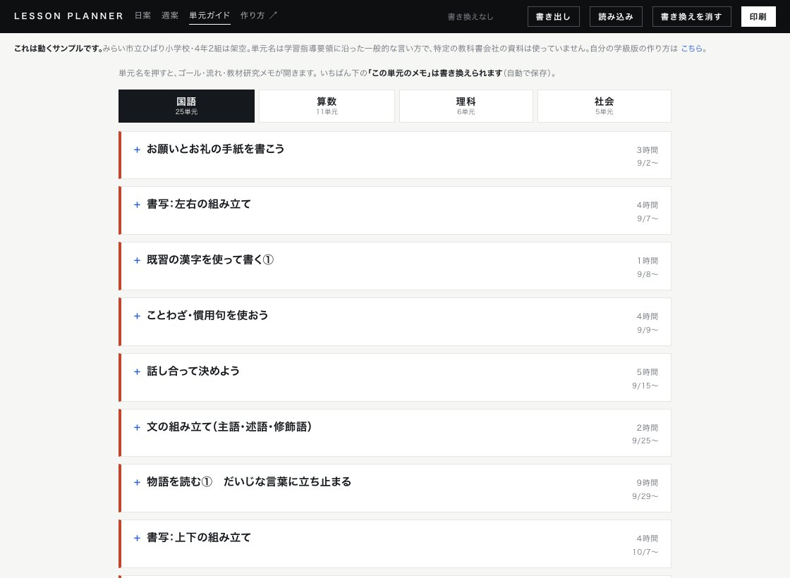
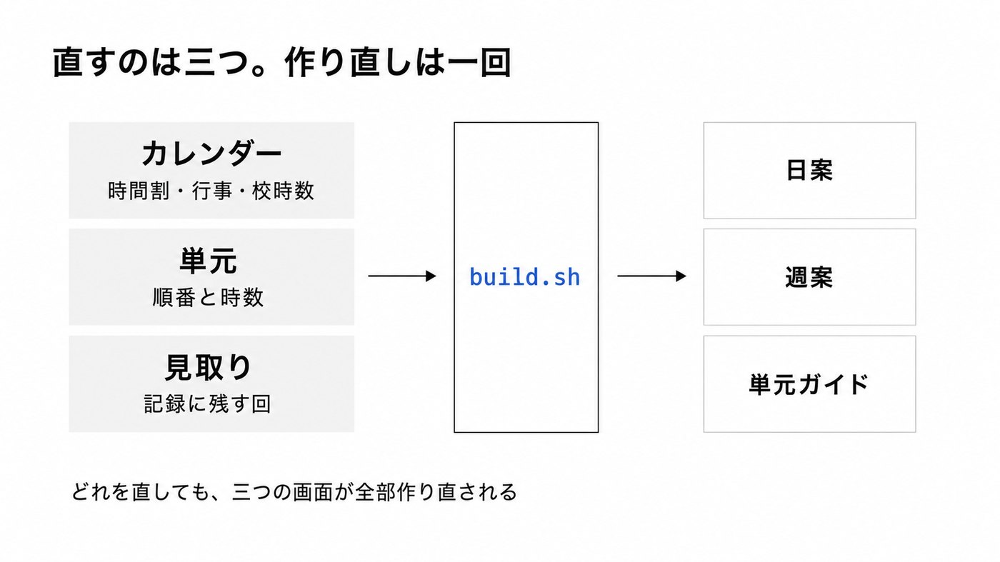
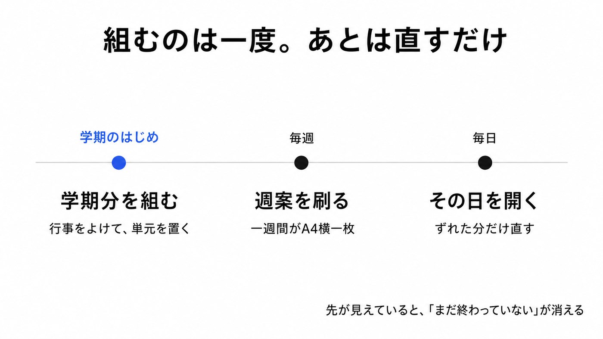

学期のはじめに一度組んでおくと、「まだ組んでいない」が頭から消えます。 その道具を Claude Code や Codex にどう頼んで作ったか、使ったプロンプトを全部のせました。 テンプレートと動くサンプルは無料で公開しています。
先に1つだけ。教科書会社の年間指導計画は、自分の授業準備のためだけに使ってください。 配り直したり、まとめてどこかに上げたりはしないでください。理由は記事の中ほどに書いています。
2学期の時間割を組むのは、毎年やっているのに毎年しんどい仕事です。行事をよけて、 年間指導計画とにらめっこして、国語は週にこのくらい、算数はこのくらい、と埋めていく。
しんどさの正体は、手を動かす作業ではないと思っています。決めなければいけないことの数のほうです。 今日の3時間目は何からやろう。来週の時間割はどう組もう。この単元、あと何時間残っていたか。 ひとつひとつは小さいのに、1日に何十回もあって、朝から少しずつ削られていきます。
たたき台が先にあると、この判断が「決める」から「直す」に変わります。 ゼロから考えるのと、目の前の案を見て「ここは違うな」と直すのとでは、必要な力がずいぶん違う。

それに、頭の片すみで「早く来週の分も組まないと」と思い続けているのが、地味にきついんです。 思い出しては、目の前のことに追われて忘れて、夜にまた「まだ終わっていない」が戻ってくる。
先行きが見えないと不安になりますが、見通しが立つと少し気が楽になります。 学期のはじめに一度組んでおくのは、そのためだと思っています。
ブラウザで開く画面が3枚です。特別なアプリは要りません。



プログラミングの知識は要りません。私も書いていません。全部、話しことばで頼みました。
「授業プランナーを作って」とだけ頼むと、毎回ちがうものが出てきます。 出てきたものを見てから直しはじめることになるので、かえって遠回りでした。
そこで、動くものをテンプレートとして公開しています。 中身は全部架空のサンプルです。これを手元に落として、自分の学校のものに書き換えていくのがいちばん早いです。
git clone https://github.com/A-TOZAK/jugyo-planner.git cd jugyo-planner ./build.sh
これで docs/ に3枚のHTMLができます。ダブルクリックで開いて、動くことを確かめてから先へ進みます。
書き換える場所は3つだけです。カレンダー（学校の時間割と行事）、単元（順番と時数）、見取り（記録に残す回）。 この3つを直して、作り直しの命令を1回打つと、3枚の画面が全部作りかえられます。

下の枠はそのままコピーして使えます。Claude Code か Codex を、落としてきたフォルダで開いてから貼ってください。
最初の1本だけは長めです。ここで「何を聞けばいいか」をAIの側に持たせておくと、 あとは聞かれたことに答えるだけで組み上がります。
このリポジトリは「学期分の授業の見通しを作る道具」です。 まず README.md と data/ の3ファイルを読んでください。 そのうえで、私の学級版に作り替えるのを手伝ってほしいです。 まず data/calendar_data.py から始めます。私に順番に質問してください。 知りたいはずのことは、たぶんこのあたりです。 - 学校名・学年組・いつからいつまでか - 何曜日が何時間授業か - 固定で決まっているコマ（体育・専科・図書など、曜日と校時） - 教科ごとの週の時数 - 学期中の行事（始業式・運動会・遠足・研究授業・委員会・短縮日程・終業式など） - 研究授業があるなら、何月何日の何校時に、どの単元の何時間目を持ってきたいか 行事は思い出した順に喋るので、日付と曜日が合わないところは指摘してください。 祝日はそちらで調べて入れてください。 カレンダーができたら ./build.sh を実行して、docs/index.html を開いて見せてください。 そこまでできたら、次は単元（data/units_data.py）に進みます。
行事は思い出した順に喋って大丈夫です。「10月の第3週あたりに運動会」でも、日付と曜日が合わないところは向こうが聞き返してきます。祝日は調べて入れてくれます。
カレンダーができたら、次は単元です。教科書会社の年間指導計画をPDFかスクリーンショットで渡します。
教科書会社の年間指導計画を渡します（PDFかスクリーンショット）。 これをもとに、data/units_data.py の SEQ を書き換えてください。 条件： - 単元の順番と時数を、この資料のとおりに - 2学期に入る範囲だけでいい - 割り付けたあと、学期内に入りきらない時数があれば教えてください DETAIL（単元カードの中身）は、まず主要な単元だけでいいです。 ゴールは「この単元が終わったとき、子どもが何をできればいいか」を 子どもの言葉で1文。あとは1時間ずつの流れと、つまずきそうなところ。
「入りきらない時数があれば教えてください」の一行が効きます。黙って詰め込まれるより、あと2時間入りませんと言われたほうが、どこを削るか自分で決められます。
できあがった自分の学級版も、同じ理由で外には出しません。手元で使うぶんには何の問題もありません。
研究授業がある教科は、先に「その日にこの時間を当てたい」を決めておけます。 書いておくと、逆算して単元の開始を後ろにずらし、前の単元に予備の時間を入れてくれます。
12月4日の5校時に、理科「物の体積と温度」の6時間目（本時）を持ってきたいです。 data/units_data.py の ANCHOR にそう書いて、逆算して割り付け直してください。 - 単元の開始を後ろにずらして合わせてください - 空いた分は、前の単元に予備・ふく習として足してください - ぴったり合ったかどうか、ずれているなら何時間ずれているかを教えてください
日程が動いたときは「研究授業が12/11にずれた。逆算し直して」と言えばやり直してくれます。
ここは道具の話というより、考え方の話です。毎時間3観点をつける形にはしていません。 記録に残す回は単元で2〜4回に絞っています。
教科書会社の年間指導計画にも【重点】【記録】という欄があって、記録に残す回は最初から絞られています。 全部つけようとすると、記録を作ることが目的になって、肝心の「次の1時間に生かす」が消えてしまうので。
data/assess_data.py を、私の単元に合わせて書き換えてください。 条件： - 記録に残す回は、単元で2〜4回に絞ること - 毎時間3観点をつけない - それ以外の時間は「次の1時間に生かす見取り」として扱う - 見るものは、子どもの姿の言葉で書く（「〜できているか」）
授業は水物です。子どもの反応で進みは変わりますし、思っていたより進んでいないこともよくあります。 急に休むことも、出張が入ることもある。だから「一度作って終わり」ではなく、直しやすい形で持っておくことにしました。
直すときは、こう言うだけです。
10/26は5時間授業になった。作り直して 面積が1時間押した。11時間にして後ろを送って 11/9の3・4時間目、出張で自習にして 研究授業が12/11にずれた。逆算し直して
この4行はまとめて貼るものではなく、そのつど1行ずつ言うものです。
できあがった画面の各コマに、AIに投げるための文章が4本ついています。 単元名も、全何時間の何時間目かも、前後の時間も、すでに埋まった状態です。 コピーして貼るだけで、書き換えるのは「今の学級の様子」の1〜3行だけ。
4本目だけは子どもの書いたものを扱います。ここで先に決めておくことが1つあります。 どのAIを使うかです。教育委員会などから承認されたGeminiなどを使ってください。 承認されていないAIを個人のアカウントで使うこと（シャドーAI）はやめましょう。 何が認められているかは自治体のセキュリティポリシーに書いてあります。 学校で決まっていないことがあれば、管理職や情報担当の先生に一度聞いてから使うのが確実です。
そのうえで、この4本目には 氏名を入れずにA児・B児として扱うという条件を、あらかじめ文章の中に書き込んであります。 毎回思い出さなくていいように、道具の側に埋めておく作りにしました。

実際に動くものを、そのまま見られる形にしています。日付を押して、コマを開いて、 プロンプトをコピーして、画面の文字を書き換えるところまで全部できます。会員登録はありません。
中身は自由に使っていただいて、自由に作り替えていただいて大丈夫です（MITライセンス）。
この道具を作ったときの話は、こちらに書いています → 学期分の見通しを、AIと一緒に組んでみた
「うちの学校の時間割の組み方だとどうなるか」「学年でそろえたい」「自治体で試したい」といった相談があれば、 どうぞ。試してみてどうだったかを教えてもらえるのも、うれしいです。
組んでしまえば、あとは直すだけになります。 「まだ組んでいない」が頭から消えるだけでも、けっこう違うな、というのが使ってみての実感です。
← 実践アイデアにもどる